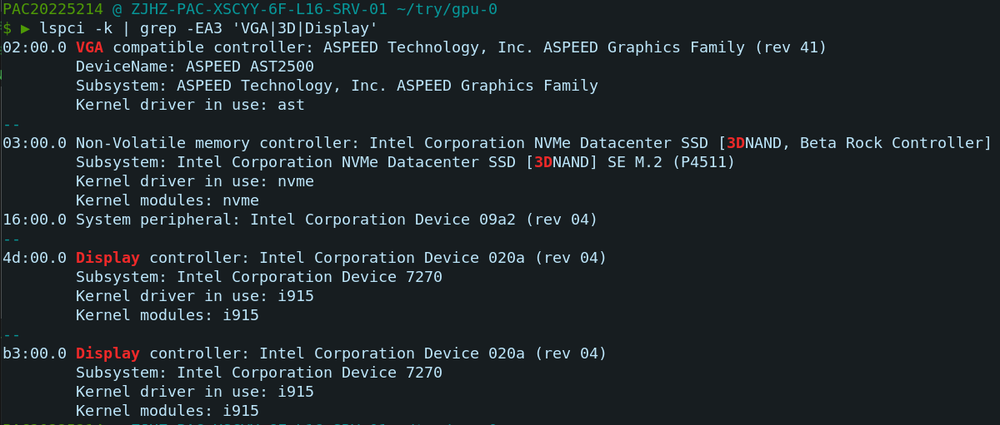
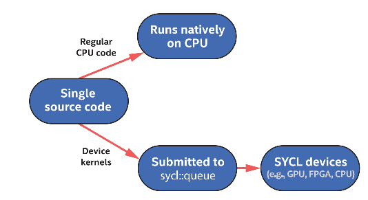
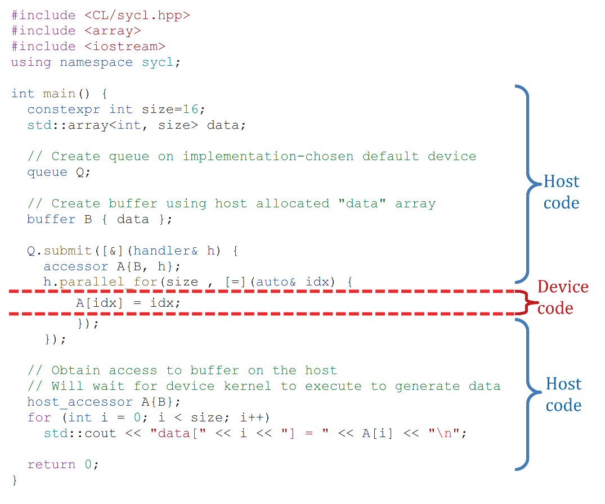
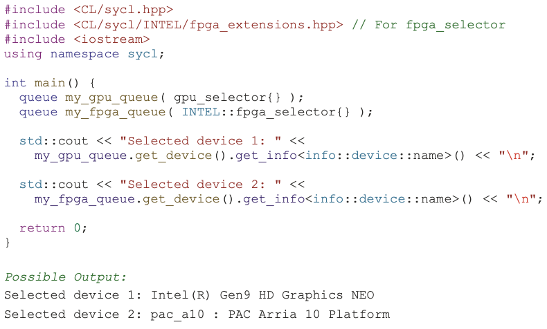
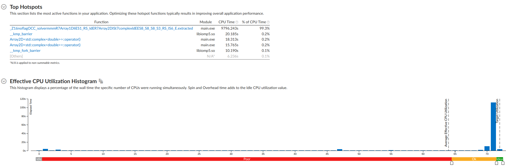
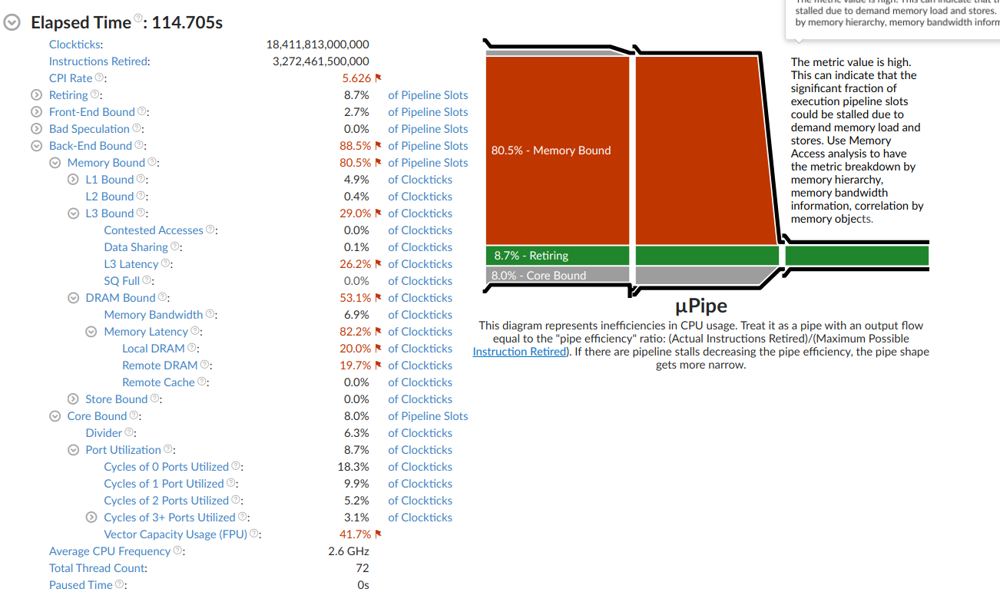
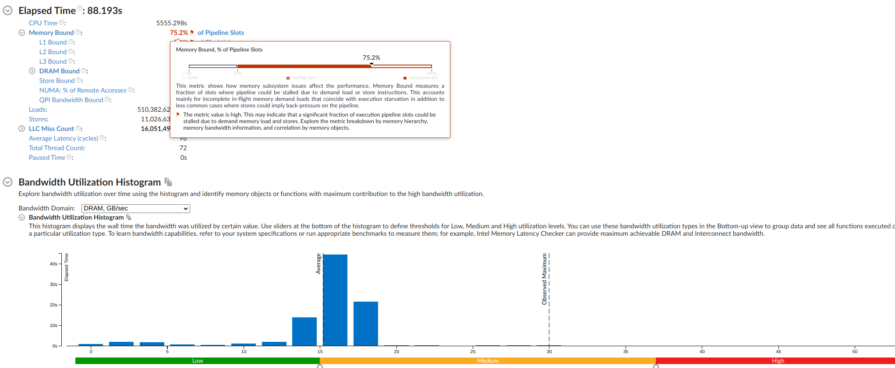
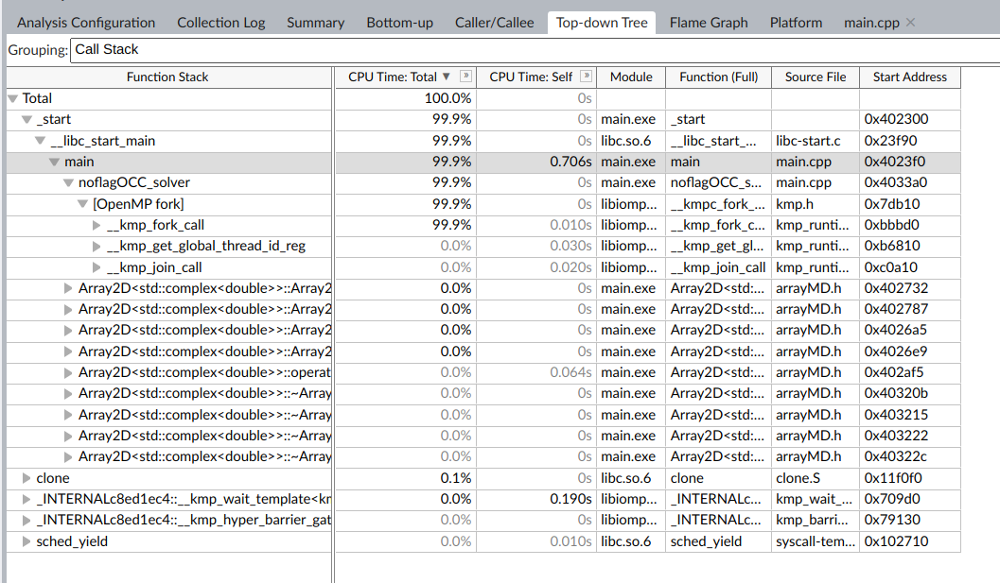

2208-在 Intel GPU 上的一次优化
PAC 2022 优化组竞赛要求使用 Intel GPU，在这里进行一些测试和学习
卡
首先我先试图摸清自己用的是什么设备
1 | |
输出结果：

编号 7270，在 Intel 官网上也没找到相应的资料，非常难进行分析。
代码执行模型
异构计算模型
由于异构设备的存在，我们不必将所有的计算部分代码放在 CPU 上执行。但是 DPCPP 提供的思路是，我们不需要将代码分开编写，可以使用 regular code + device kernel API 的方法进行编程，从而减轻项目管理的负担。例如在 Cuda + Cpp 编程的时候复杂的编译器更换和环境处理需要很多经验，OneAPI 从设计上避免了这一问题。

官方的一个例子：

其中 Host code 是 CPU 执行的代码，Device code 是异构设备执行的代码。sycl::Queue 作为一种执行机制，计算任务或者说不同的核函数是提交给执行队列调度的。
执行逻辑和一遍编程不同的地方在于：
- 调度逻辑是异步的。host 和 device 分别按照各自的逻辑执行。对 host 来说，遇到 device code，将任务提交给对应设备队列，之后直接执行之后的任务，除非我们提出需要等待或者需要使用 device 返回的数据（和 async + future 的逻辑类似）；对 device 来说，获取任务之后等待 runtime 调度。device 的 runtime 会根据当前任务的依赖关系分析，是否可以执行。
- 虽然 host 和 device 的代码都写在同一个 C++ 代码文件中，但是 device 代码进行了一些功能上的限制以保证性能。例如动态内存申请(dynamic allocation)和运行时类型信息(RTTI)是不支持的。
- 由于功能限制，sycl 上定义的一些函数只能在特定类型设备上执行。
简而言之，DPCPP 在 CPP 的基础上，为了适应异构计算，提供了异步编程环境 + 异步设备编程限制。
个人评价：这种执行方案和编程思想固然是好的，但是编译器会承担过多的责任。对于不同的设备和平台，大家使用的内存模型、计算模型往往不一样，为此，需要进行的优化是迥然不同的。使用通用的 DPCPP 的编译器是任重道远的任务。皮衣老黄的一些锐评也指出了 OneAPI 在商业上的激进。但是我个人认为这未必是坏事，改项目很有可能作为未来 C 语系的重要编译器发展方向，异构编译的思路应该结合图计算进行。将计算更充分的进行调度。
调度设备方法
如上图所示，我们的计算设备的调度都是通过 queue 进行的，将任务放入其中，理论上，如果队列中的任务是没有依赖的，那么会自动调度。
为了充分调度每一个设备，调度方法是：为每一个计算设备单独开设对应的调度队列。


queue 调度的优势是可以处理计算任务的依赖，如果有依赖可以自动处理（机理应该是和 TBB 中的一致，待学习）。
项目优化
本次项目是在一次比赛中接触的，比赛时要求对一个矩阵乘法进行优化，原始核心代码如下：
1 | |
基础分析
首先使用 Vtune 进行了初步分析，得到以下结果：





简单来说，访存成为了瓶颈，此外计算核心全部位于多重矩阵乘法，因此优化思路大致如下：
- 优化访存次序
- 抑制 GPU
- 调整 GPU 访存
访存次序
首先将访存中行列顺序反常的项更改，减少访存消耗。
1 | |
GPU 移植
在 GPU 上进行代码移植不是很难，需要解决如下问题：
- CPU 和 GPU 上的数据一致性，如何将数据拷贝过去使用，并如何拷贝回来计算结果
- GPU 的计算模式，是否是基于循环的，如果是，如何编写核函数
数据拷贝
在 oneAPI 中编程是，和 cuda 中有一个类似的机制，是可以将各个设备是和的内存协同管理，和 PGAS 的设计思想有一定的相似，但是这里的 shared memory 是 global & heterogeneous。
举个例子，一个数组在 CPU 上开辟，初始化，在异构设备上同步的方法是：
1 | |
这里的使用方法比较微妙，我们在队列中所有的操作都可以直接被认为是对 a 数组的操作，并且会在队列执行结束之后自动同步。
之前的内容也提到了，这里的执行是异步的，submit 仅仅是提交了任务，而不是等待任务执行完成。如果在 submit 之后需要进行其他更多的操作，我们需要加上 q.wait() 操作。
核函数
对于并行的循环，我们通常会使用 sycl 中的 parallel_for 进行编程。接口需要的参数是：
- nd_range(range1, range2)
- (optional) functional module
- lambda function
第一个参数用来指定计算任务的总范围和每一个 kernel 的分块范围
第二个参数用来补充额外的 module，例如有一些操作是原子的，或者是需要使用 reduction 功能，则会使用指定的函数
第三个参数用于说明循环中执行的具体任务内容
具体实践
对于上面的函数我们实现代码如下:
1 | |
由于类型限制，我们三次统计需要分别执行，这里省去了一些同样的代码片段
BlockSize
对于 GPU 来说，最重要的一个参数调整，就是计算网格大小的划分。我们每一个 block 计算多少，维度如何分配，这些都会对计算效率产生一定的影响。Intel 计算中也是如此。一般的做法是可以使用调参脚本完成，也可以使用对 Cache 大小进行粗略计算得到范围后细致微调。
例如本算例中我们试出
nd_range<3>(loop_range, range<3>(8, 2, 64))
是最好的 blocksize。
双卡双开
之后一个重要的方法是调用多设备，构建了可以调度两张卡的设备队列：
1 | |
并将计算均匀划分到两个队列中。
提取因子
这里提取了一些公因子用更好的计算，我们回顾一下之前的 kernel function：
1 | |
不难看出：sch_store1 是一个只和 i k 相关的量，进行了重复的计算。为此将这部分单独提取计算存储。
优化代码如下：1
2
3
4
5
6
7
8
9
10
11
12
13
14
15
16
17
18
19
20
21
22
23
24
25
26
27
28
29
30
31
32
33
34
35
36
37
38
39
40
41
42
43
44
45
46
47
48
49
50
51
52
53
54
55
56
57
58
59
60
61
62
63
64
65
66
67
68
69
70
71
72
73
74
75
76
77
78
79
80
81
82
83
84
85
86
87
88
89
90
91
92
93
94
95
96
97
98
99
100
101
102
103
104
105
106
107
108
109
110
111
112
113
114
115
116
117
118
119
120
121
122
123
124
125
126
127
128
129
130
131
132// queue and loop range
queue &q1 = qs[0];
queue &q2 = qs[1];
range<3> loop_range(ncouls / 2, ngpown, number_bands);
range<2> factor_loop_range(ngpown / 2, number_bands);
ComplexType *ach0 = malloc_shared<ComplexType>(1, q1);
ComplexType *ach1 = malloc_shared<ComplexType>(1, q1);
ComplexType *ach2 = malloc_shared<ComplexType>(1, q1);
ComplexType *bch0 = malloc_shared<ComplexType>(1, q2);
ComplexType *bch1 = malloc_shared<ComplexType>(1, q2);
ComplexType *bch2 = malloc_shared<ComplexType>(1, q2);
q1.submit([&](handler &h) {
// accessor
auto inv_igp_index_acc = inv_igp_index_buf.get_access<access::mode::read>(h);
auto indinv_acc = indinv_buf.get_access<access::mode::read>(h);
auto wx_array_acc = wx_array_buf.get_access<access::mode::read>(h);
auto wtilde_array_acc = wtilde_array_buf.get_access<access::mode::read>(h);
auto aqsmtemp_acc = aqsmtemp_buf.get_access<access::mode::read>(h);
auto aqsntemp_acc = aqsntemp_buf.get_access<access::mode::read>(h);
auto I_eps_array_acc = I_eps_array_buf.get_access<access::mode::read>(h);
auto vcoul_acc = vcoul_buf.get_access<access::mode::read>(h);
auto factor_acc = factor_buf.get_access<access::mode::write>(h);
h.parallel_for(
nd_range<2>(factor_loop_range, range<2>(1, 512)),
[=](nd_item<2> index) {
int k = index.get_global_id(0);
int i = index.get_global_id(1);
int indigp = inv_igp_index_acc[k];
int igp = indinv_acc[indigp];
ComplexType aqsmconj = ComplexType(aqsmtemp_acc[igp][i].real(), -aqsmtemp_acc[igp][i].imag());
factor_acc[k][i] = aqsmconj * aqsntemp_acc[igp][i] * 0.5 * vcoul_acc[igp] * wtilde_array_acc[igp][k];
}
);
});
q2.submit([&](handler &h) {
// accessor
auto inv_igp_index_acc = inv_igp_index_buf.get_access<access::mode::read>(h);
auto indinv_acc = indinv_buf.get_access<access::mode::read>(h);
auto wx_array_acc = wx_array_buf.get_access<access::mode::read>(h);
auto wtilde_array_acc = wtilde_array_buf.get_access<access::mode::read>(h);
auto aqsmtemp_acc = aqsmtemp_buf.get_access<access::mode::read>(h);
auto aqsntemp_acc = aqsntemp_buf.get_access<access::mode::read>(h);
auto I_eps_array_acc = I_eps_array_buf.get_access<access::mode::read>(h);
auto vcoul_acc = vcoul_buf.get_access<access::mode::read>(h);
auto factor_acc = factor_buf.get_access<access::mode::write>(h);
h.parallel_for(
nd_range<2>(factor_loop_range, range<2>(1, 512)),
[=](nd_item<2> index) {
int k = index.get_global_id(0) + ngpown / 2;
int i = index.get_global_id(1);
int indigp = inv_igp_index_acc[k];
int igp = indinv_acc[indigp];
ComplexType aqsmconj = ComplexType(aqsmtemp_acc[igp][i].real(), -aqsmtemp_acc[igp][i].imag());
factor_acc[k][i] = aqsmconj * aqsntemp_acc[igp][i] * 0.5 * vcoul_acc[igp] * wtilde_array_acc[igp][k];
}
);
});
q1.wait();
q2.wait();
q1.submit([&](handler &h) {
// accessor
auto inv_igp_index_acc = inv_igp_index_buf.get_access<access::mode::read>(h);
auto indinv_acc = indinv_buf.get_access<access::mode::read>(h);
auto wx_array_acc = wx_array_buf.get_access<access::mode::read>(h);
auto wtilde_array_acc = wtilde_array_buf.get_access<access::mode::read>(h);
auto I_eps_array_acc = I_eps_array_buf.get_access<access::mode::read>(h);
auto factor_acc = factor_buf.get_access<access::mode::read>(h);
h.parallel_for(
nd_range<3>(loop_range, range<3>(32, 1, 32)),
sycl::ext::oneapi::reduction(
ach0,
ComplexType(0, 0),
std::plus<ComplexType>()
),
[=](nd_item<3> index, auto &temp) {
int j = index.get_global_id(0);
int k = index.get_global_id(1);
int i = index.get_global_id(2);
int indigp = inv_igp_index_acc[k];
int igp = indinv_acc[indigp];
ComplexType wdiff = wx_array_acc[0] - wtilde_array_acc[j][k];
ComplexType delw = ComplexType_conj(wdiff) / (wdiff.real() * wdiff.real() + wdiff.imag() * wdiff.imag());
ComplexType sch_array = delw * I_eps_array_acc[j][k] * factor_acc[k][i];
temp.combine(sch_array);
}
);
});
q2.submit([&](handler &h) {
// accessor
auto inv_igp_index_acc = inv_igp_index_buf.get_access<access::mode::read>(h);
auto indinv_acc = indinv_buf.get_access<access::mode::read>(h);
auto wx_array_acc = wx_array_buf.get_access<access::mode::read>(h);
auto wtilde_array_acc = wtilde_array_buf.get_access<access::mode::read>(h);
auto aqsmtemp_acc = aqsmtemp_buf.get_access<access::mode::read>(h);
auto aqsntemp_acc = aqsntemp_buf.get_access<access::mode::read>(h);
auto I_eps_array_acc = I_eps_array_buf.get_access<access::mode::read>(h);
auto vcoul_acc = vcoul_buf.get_access<access::mode::read>(h);
auto factor_acc = factor_buf.get_access<access::mode::read>(h);
h.parallel_for(
nd_range<3>(loop_range, range<3>(32, 1, 32)),
sycl::ext::oneapi::reduction(
bch0,
ComplexType(0, 0),
std::plus<ComplexType>()
),
[=](nd_item<3> index, auto &temp) {
int j = index.get_global_id(0) + ncouls / 2;
int k = index.get_global_id(1);
int i = index.get_global_id(2);
int indigp = inv_igp_index_acc[k];
int igp = indinv_acc[indigp];
ComplexType wdiff = wx_array_acc[0] - wtilde_array_acc[j][k];
ComplexType delw = ComplexType_conj(wdiff) / (wdiff.real() * wdiff.real() + wdiff.imag() * wdiff.imag());
ComplexType sch_array = delw * I_eps_array_acc[j][k] * factor_acc[k][i];
temp.combine(sch_array);
}
);
});
q1.wait();
q2.wait();
ach_re0 = ach0->real() + bch0->real();
ach_im0 = ach0->imag() + bch0->imag();
sycl::free(ach0, q1);
sycl::free(bch0, q2);
自定义 reduction 类型
最后，整理代码，重复三次的计算带来了更多的工作量，如果需要更好的提升效率，我们需要将 reduction 进行微调处理，自定义重载 std::plus 的类型。
完整的函数如下：1
2
3
4
5
6
7
8
9
10
11
12
13
14
15
16
17
18
19
20
21
22
23
24
25
26
27
28
29
30
31
32
33
34
35
36
37
38
39
40
41
42
43
44
45
46
47
48
49
50
51
52
53
54
55
56
57
58
59
60
61
62
63
64
65
66
67
68
69
70
71
72
73
74
75
76
77
78
79
80
81
82
83
84
85
86
87
88
89
90
91
92
93
94
95
96
97
98
99
100
101
102
103
104
105
106
107
108
109
110
111
112
113
114
115
116
117
118
119
120
121
122
123
124
125
126
127
128
129
130
131
132
133
134
135
136
137
138
139
140
141
142
143
144
145
146
147
148
149
150
151
152
153
154
155
156
157
158
159
160
161
162
163
164
165
166
167
168
169
170
171
172
173
174
175
176
177
178
179
180
181
182
183
184
185
186
187
188void noflagOCC_solver(size_t number_bands, size_t ngpown, size_t ncouls,
ARRAY1D_int &inv_igp_index, ARRAY1D_int &indinv,
ARRAY1D_DataType &wx_array, ARRAY2D &wtilde_array,
ARRAY2D &aqsmtemp, ARRAY2D &aqsntemp,
ARRAY2D &I_eps_array, ARRAY1D_DataType &vcoul,
ARRAY1D &achtemp, std::vector<queue> &qs) {
time_point<system_clock> start, end;
start = system_clock::now();
// Vars to use for reduction
DataType ach_re0 = 0.00, ach_re1 = 0.00, ach_re2 = 0.00, ach_im0 = 0.00,
ach_im1 = 0.00, ach_im2 = 0.00;
// array range
// range for achtemp, wx_array
range<1> array_range1(nend - nstart);
// range for aqsmtemp, aqsntemp
range<2> array_range2(ncouls, number_bands);
// range for I_eps_array
range<2> array_range3(ncouls, ngpown);
// range for wtilde_array
range<2> array_range4(ncouls, ngpown);
// range for vcoul
range<1> array_range5(ncouls);
// range for inv_igp_index
range<1> array_range6(ngpown);
// range for indinv
range<1> array_range7(ncouls + 1);
ARRAY2D factor(ncouls, number_bands);
// buffer
buffer inv_igp_index_buf(inv_igp_index.dptr, array_range6);
buffer indinv_buf(indinv.dptr, array_range7);
buffer wx_array_buf(wx_array.dptr, array_range1);
buffer wtilde_array_buf(wtilde_array.dptr, array_range4);
buffer aqsmtemp_buf(aqsmtemp.dptr, array_range2);
buffer aqsntemp_buf(aqsntemp.dptr, array_range2);
buffer I_eps_array_buf(I_eps_array.dptr, array_range3);
buffer vcoul_buf(vcoul.dptr, array_range5);
buffer factor_buf(factor.dptr, array_range2);
// queue and loop range
queue &q1 = qs[0];
queue &q2 = qs[1];
range<3> loop_range(ncouls / 2, ngpown, number_bands);
range<2> factor_loop_range(ngpown / 2, number_bands);
q1.submit([&](handler &h) {
// accessor
auto inv_igp_index_acc = inv_igp_index_buf.get_access<access::mode::read>(h);
auto indinv_acc = indinv_buf.get_access<access::mode::read>(h);
auto wx_array_acc = wx_array_buf.get_access<access::mode::read>(h);
auto wtilde_array_acc = wtilde_array_buf.get_access<access::mode::read>(h);
auto aqsmtemp_acc = aqsmtemp_buf.get_access<access::mode::read>(h);
auto aqsntemp_acc = aqsntemp_buf.get_access<access::mode::read>(h);
auto I_eps_array_acc = I_eps_array_buf.get_access<access::mode::read>(h);
auto vcoul_acc = vcoul_buf.get_access<access::mode::read>(h);
auto factor_acc = factor_buf.get_access<access::mode::write>(h);
h.parallel_for(
nd_range<2>(factor_loop_range, range<2>(1, 512)),
[=](nd_item<2> index) {
int k = index.get_global_id(0);
int i = index.get_global_id(1);
int indigp = inv_igp_index_acc[k];
int igp = indinv_acc[indigp];
ComplexType aqsmconj = ComplexType(aqsmtemp_acc[igp][i].real(), -aqsmtemp_acc[igp][i].imag());
factor_acc[k][i] = aqsmconj * aqsntemp_acc[igp][i] * 0.5 * vcoul_acc[igp] * wtilde_array_acc[igp][k];
}
);
});
q2.submit([&](handler &h) {
// accessor
auto inv_igp_index_acc = inv_igp_index_buf.get_access<access::mode::read>(h);
auto indinv_acc = indinv_buf.get_access<access::mode::read>(h);
auto wx_array_acc = wx_array_buf.get_access<access::mode::read>(h);
auto wtilde_array_acc = wtilde_array_buf.get_access<access::mode::read>(h);
auto aqsmtemp_acc = aqsmtemp_buf.get_access<access::mode::read>(h);
auto aqsntemp_acc = aqsntemp_buf.get_access<access::mode::read>(h);
auto I_eps_array_acc = I_eps_array_buf.get_access<access::mode::read>(h);
auto vcoul_acc = vcoul_buf.get_access<access::mode::read>(h);
auto factor_acc = factor_buf.get_access<access::mode::write>(h);
h.parallel_for(
nd_range<2>(factor_loop_range, range<2>(1, 512)),
[=](nd_item<2> index) {
int k = index.get_global_id(0) + ngpown / 2;
int i = index.get_global_id(1);
int indigp = inv_igp_index_acc[k];
int igp = indinv_acc[indigp];
ComplexType aqsmconj = ComplexType(aqsmtemp_acc[igp][i].real(), -aqsmtemp_acc[igp][i].imag());
factor_acc[k][i] = aqsmconj * aqsntemp_acc[igp][i] * 0.5 * vcoul_acc[igp] * wtilde_array_acc[igp][k];
}
);
});
q1.wait();
q2.wait();
CollectorResult *collector_a = malloc_shared<CollectorResult>(1, q1);
CollectorResult *collector_b = malloc_shared<CollectorResult>(2, q2);
q1.submit([&](handler &h) {
// accessor
auto inv_igp_index_acc = inv_igp_index_buf.get_access<access::mode::read>(h);
auto indinv_acc = indinv_buf.get_access<access::mode::read>(h);
auto wx_array_acc = wx_array_buf.get_access<access::mode::read>(h);
auto wtilde_array_acc = wtilde_array_buf.get_access<access::mode::read>(h);
auto I_eps_array_acc = I_eps_array_buf.get_access<access::mode::read>(h);
auto factor_acc = factor_buf.get_access<access::mode::read>(h);
h.parallel_for(
nd_range<3>(loop_range, range<3>(16, 1, 32)),
sycl::ext::oneapi::reduction(
collector_a,
CollectorResult(),
std::plus<CollectorResult>()
),
[=](nd_item<3> index, auto &temp) {
int j = index.get_global_id(0);
int k = index.get_global_id(1);
int i = index.get_global_id(2);
int indigp = inv_igp_index_acc[k];
int igp = indinv_acc[indigp];
ComplexType wdiff0 = wx_array_acc[0] - wtilde_array_acc[j][k];
ComplexType wdiff1 = wx_array_acc[1] - wtilde_array_acc[j][k];
ComplexType wdiff2 = wx_array_acc[2] - wtilde_array_acc[j][k];
ComplexType delw0 = ComplexType_conj(wdiff0) / (wdiff0.real() * wdiff0.real() + wdiff0.imag() * wdiff0.imag());
ComplexType delw1 = ComplexType_conj(wdiff1) / (wdiff1.real() * wdiff1.real() + wdiff1.imag() * wdiff1.imag());
ComplexType delw2 = ComplexType_conj(wdiff2) / (wdiff2.real() * wdiff2.real() + wdiff2.imag() * wdiff2.imag());
ComplexType sch_array0 = delw0 * I_eps_array_acc[j][k] * factor_acc[k][i];
ComplexType sch_array1 = delw1 * I_eps_array_acc[j][k] * factor_acc[k][i];
ComplexType sch_array2 = delw2 * I_eps_array_acc[j][k] * factor_acc[k][i];
temp.combine(CollectorResult(sch_array0, sch_array1, sch_array2));
}
);
});
q2.submit([&](handler &h) {
// accessor
auto inv_igp_index_acc = inv_igp_index_buf.get_access<access::mode::read>(h);
auto indinv_acc = indinv_buf.get_access<access::mode::read>(h);
auto wx_array_acc = wx_array_buf.get_access<access::mode::read>(h);
auto wtilde_array_acc = wtilde_array_buf.get_access<access::mode::read>(h);
auto aqsmtemp_acc = aqsmtemp_buf.get_access<access::mode::read>(h);
auto aqsntemp_acc = aqsntemp_buf.get_access<access::mode::read>(h);
auto I_eps_array_acc = I_eps_array_buf.get_access<access::mode::read>(h);
auto vcoul_acc = vcoul_buf.get_access<access::mode::read>(h);
auto factor_acc = factor_buf.get_access<access::mode::read>(h);
h.parallel_for(
nd_range<3>(loop_range, range<3>(16, 1, 32)),
sycl::ext::oneapi::reduction(
collector_b,
CollectorResult(),
std::plus<CollectorResult>()
),
[=](nd_item<3> index, auto &temp) {
int j = index.get_global_id(0) + ncouls / 2;
int k = index.get_global_id(1);
int i = index.get_global_id(2);
int indigp = inv_igp_index_acc[k];
int igp = indinv_acc[indigp];
ComplexType wdiff0 = wx_array_acc[0] - wtilde_array_acc[j][k];
ComplexType wdiff1 = wx_array_acc[1] - wtilde_array_acc[j][k];
ComplexType wdiff2 = wx_array_acc[2] - wtilde_array_acc[j][k];
ComplexType delw0 = ComplexType_conj(wdiff0) / (wdiff0.real() * wdiff0.real() + wdiff0.imag() * wdiff0.imag());
ComplexType delw1 = ComplexType_conj(wdiff1) / (wdiff1.real() * wdiff1.real() + wdiff1.imag() * wdiff1.imag());
ComplexType delw2 = ComplexType_conj(wdiff2) / (wdiff2.real() * wdiff2.real() + wdiff2.imag() * wdiff2.imag());
ComplexType sch_array0 = delw0 * I_eps_array_acc[j][k] * factor_acc[k][i];
ComplexType sch_array1 = delw1 * I_eps_array_acc[j][k] * factor_acc[k][i];
ComplexType sch_array2 = delw2 * I_eps_array_acc[j][k] * factor_acc[k][i];
temp.combine(CollectorResult(sch_array0, sch_array1, sch_array2));
}
);
});
q1.wait();
q2.wait();
ach_re0 = collector_a->a0.real() + collector_b->a0.real();
ach_im0 = collector_a->a0.imag() + collector_b->a0.imag();
ach_re1 = collector_a->a1.real() + collector_b->a1.real();
ach_im1 = collector_a->a1.imag() + collector_b->a1.imag();
ach_re2 = collector_a->a2.real() + collector_b->a2.real();
ach_im2 = collector_a->a2.imag() + collector_b->a2.imag();
sycl::free(collector_a, q1);
sycl::free(collector_b, q2);
achtemp(0) = ComplexType(ach_re0, ach_im0);
achtemp(1) = ComplexType(ach_re1, ach_im1);
achtemp(2) = ComplexType(ach_re2, ach_im2);
}
其中重载的加法如下：
1 | |
References
- DPCPP book https://link.springer.com/content/pdf/10.1007/978-1-4842-5574-2.pdf
- https://www.intel.com/content/www/us/en/develop/documentation/oneapi-gpu-optimization-guide/top.html
- oneapi-3dopt https://github.com/raoberman/oneAPI-samples-Feb2022/tree/2ea2f30710bed37000a6905662fbbdbf37a30e25/DirectProgramming/DPC%2B%2B/StructuredGrids/iso3dfd_dpcpp
- oneapi-samples https://github.com/oneapi-src/oneAPI-samples/tree/master/DirectProgramming/DPC%2B%2B/StructuredGrids/guided_iso3dfd_GPUOptimization